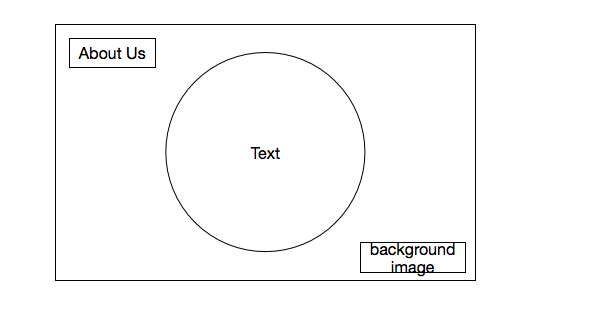
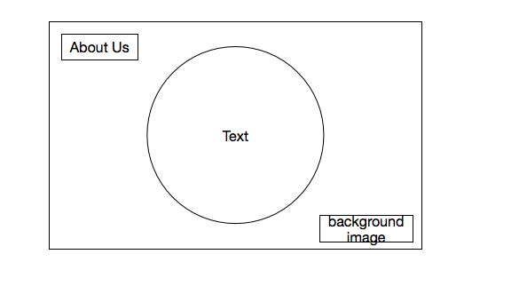

Design Challenge 1
Which two websites are you most inspired by?
I am most inspired by Siberia and Paul Latham Design.
How do they exhibit effective use of space, size, or balance? What makes them similar and different?
Siberia and Paul Latham Design both utilize hero images as their background for the index pages. Paul Latham Design only utilizes a hero image, logo, and menu tab on the index page; allowing the viewer's focus to immediately identify the solution that the site offers. Paul Latham Design utilizes size (oversized logo and hero image) and a minimalistic approach to style to create a seamless experience (flow) for the viewer as they navigate the site. Siberia is a more complex site, with a strong element of hierarchy and flow through use of varying text size, call to action to explore below the fold, content framed by negative space, and the logo centered on the index page to create balance. Both websites implement a sense of minimalism, but to varying degrees and in different layouts.
Key similarities:
- Strong element of flow is evident through the ease at which the user is able to identify next steps
- Balance established through intentional use of spacing, content framing, and images
- Solutions that sites offer are evident; not cluttered or confusing
- Hierarchy established through size of text and images used; focal point front and center
- Responsive design
- Call to action to explore below the fold
Key differences:
- Visually, Siberia offers a more complex approach to the site's solution than Paul Latham Design
- Paul Latham Design allows hero images to communicate the site's purpose and solution; hero images and simple logo create a sense of size and balance
- Siberia's focal point is centered, while Paul Latham Design's focal point is assymetrical
Thumbnail sketches


 
